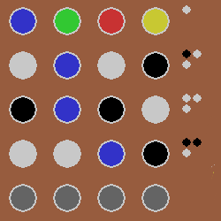
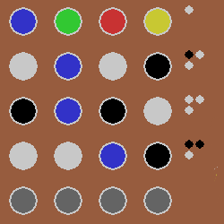

Sam Matthews
Aspiring Software Developer, Dark Theme Enthusiast
About Me
Hello, I'm Sam. I'm looking to pursue a career in software development because I'm a problem solver and I gain fulfilment from creating things that other people can use. I've already started this with my voluntary work, detailed below
(where I see myself in x years) I want to develop skills and be a valuable team member people look to for help/guidance
Volunteering

DigiLocal - Digital Ambassador
September 2019 to Present
Assisting young people at weekly coding clubs
- Providing tuition, supervision and support
- Assisting with problem solving and debugging code
- Creating project guides for the children to use
- Provided support at the NASA Space Apps Challenge 2019
- Assisting with online clubs since COVID

Leonard Cheshire - Digital Champion
September 2019 to November 2019
Introducing and educating people with disabilities in the use of basic IT to enhance their daily experience
- Teaching clients how to use a mouse, keyboard and touchscreen
- Safe use of the internet including email and online shopping
Python Projects
 



Education
I did uni
and A levels
and GCSEs
Work in Progress
To Do
- Perfect python project presentation: current idea is for each python project to be represented by an image of the project. Upon mouseover the name of the project will show, and turn the cursor into a finger pointer. Clicking the project will open a window describing the project
- Some of the projects aren't user friendly, might amend them to make it clear to the user how they are played since I'll be including links to them
- Crop pictures so that they are square
Wishlist
- Different themes
- Slick animations for mouseovers, shortcuts, etc
- Different displays for phones
Changelog (temp)
14-05-21
- Added to about me
- Added links for DigiLocal and LC
- Added Python Project Pictures
- Added Education Section
- Altered the style some more
13-05-21
- Began reworking the websites theme and putting content on one page, with the navigation bar instead moving to the different sections on the page.
05-05-21
- Added the volunteering page
- Added the changelog
- Added some more Python projects
- Changed the layout of Python projects page
- Added some python project images